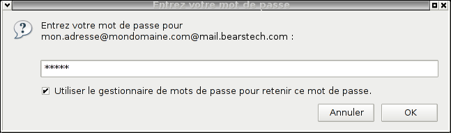

Configuration of Thunderbird.Informations about our mail account example:
E-Mail address: "mon.adresse@mondomaine.com" Configuration of thunderbird: To download Mozilla-Thunderbird, go to http://www.mozilla-europe.org/fr/products/thunderbird/ Start Thunderbird. If you already use Thunderbird, click "Fichier" tab then "Nouveau" and "Compte".
Select "Ne rien importer" then click "Suivant". A new window appears:
Select "Compte courrier électronique" then click "Suivant". A new window appears:
"Votre nom :" set "Nom". Click "Suivant". A new window appears: Select "IMAP". Serveur de réception : "Nom du serveur :" set "mail.bearstech.com". Serveur d'envoi : "Nom du serveur :" set "mail.bearstech.com". Click "Suivant". A new window appears: "Nom d'utilisateur entrant :" set "mon.adresse@mondomaine.com". "Nom d'utilisateur sortant :" set "mon.adresse@mondomaine.com". Click "Suivant". Une nouvelle fenêtre apparaît : "Nom du compte :" set "mon.adresse@mondomaine.com". Click "Suivant". A new window appears: Click "Terminer". A new window appears:  Set "a1b2c". Click "OK". A new window appears:
Click "OK". Main window of Thunderbird : Click "Édition" then "Paramètres des comptes...", or if you use windows: Outils then Paramètres des comptes...". A new window appears: Go to "Serveur Sortant (SMTP)" then select "mon.adresse@mondomaine.com - mail.bearstech.com" and click "Modifier". A new window appears: Select "TLS" or "SSL" then click "OK". Go to "Paramètres serveur" In "Paramètres de sécurité" select "TLS" or "SSL". Click "OK". Thunderbird is ready and will use secured connections. |